How to Build the Website
Step 1: TOOLS NEEDED
Installing all the tools necessary for the webpage build:
Git: Gitlab control
Github: Webpage server
Github desktop: To push or pull from the github server and to the github server
VScode: For writing our documents and code for the website and its pages
HTML Language: to write the website
CSS: Corresponds with html. Used to style the website
Installing all the tools necessary for the webpage build:
Git: Gitlab control
Github: Webpage server
Github desktop: To push or pull from the github server and to the github server
VScode: For writing our documents and code for the website and its pages
HTML Language: to write the website
CSS: Corresponds with html. Used to style the website
Step 2: PAGE SETUP
Before we begin, it is worth noting that the GitHub repository had already been setup for our team website by our supervisor. It enables us to upload our website pages to a server for us to edit as team and also setup for others to open and view the work we have done during the course of the module.
Repository Setup for Nexmaker:
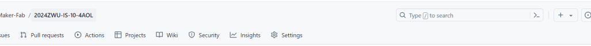
Before we begin, it is worth noting that the GitHub repository had already been setup for our team website by our supervisor. It enables us to upload our website pages to a server for us to edit as team and also setup for others to open and view the work we have done during the course of the module.
Repository Setup for Nexmaker:
Repository Directory
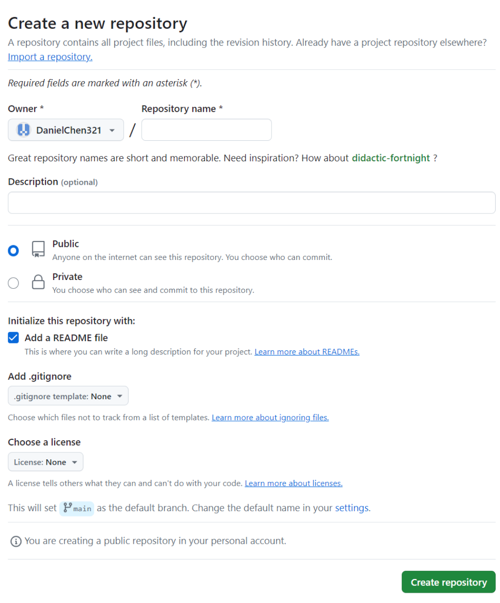
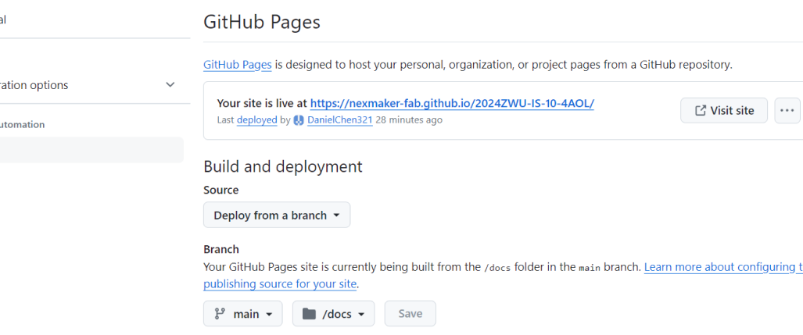
We would like to illustrate how to setup a repository the instructions are
as follows: First sign up and create a repository on github.com. Make it
public in order to grant access for others to modify. Add a README file for
the purpose of writing the website description.
 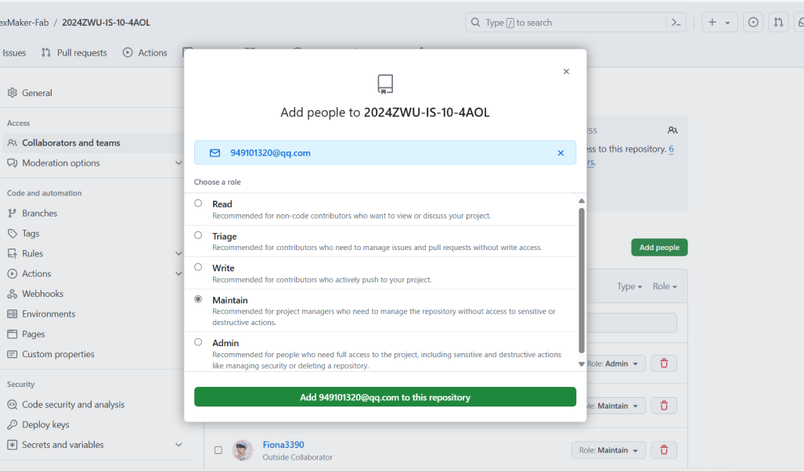
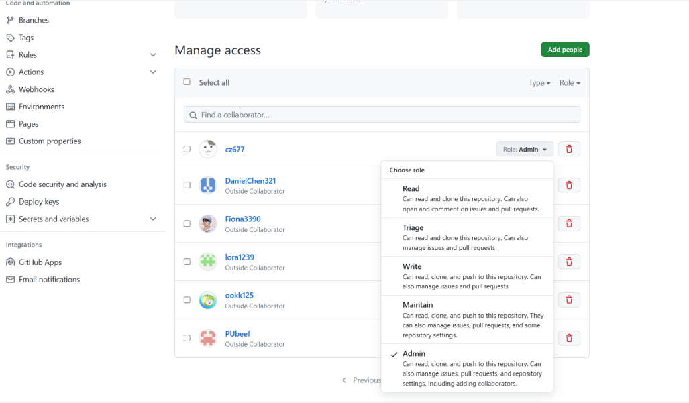
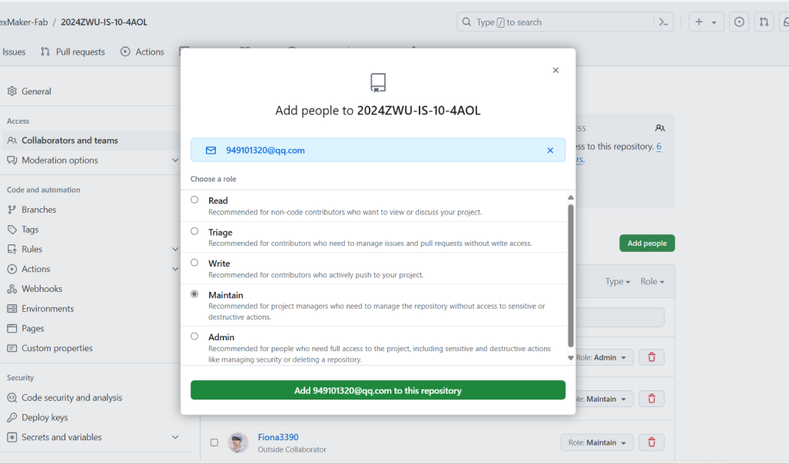
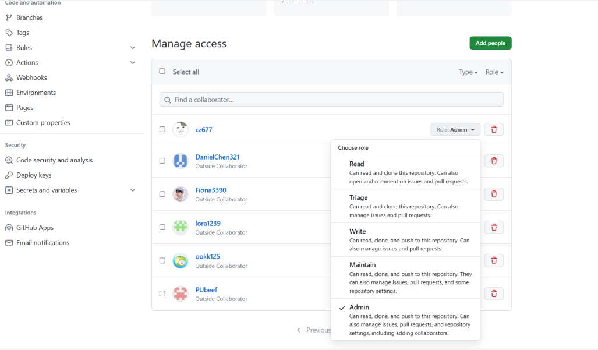
In our website one member is the admin and other members have the maintain
role.
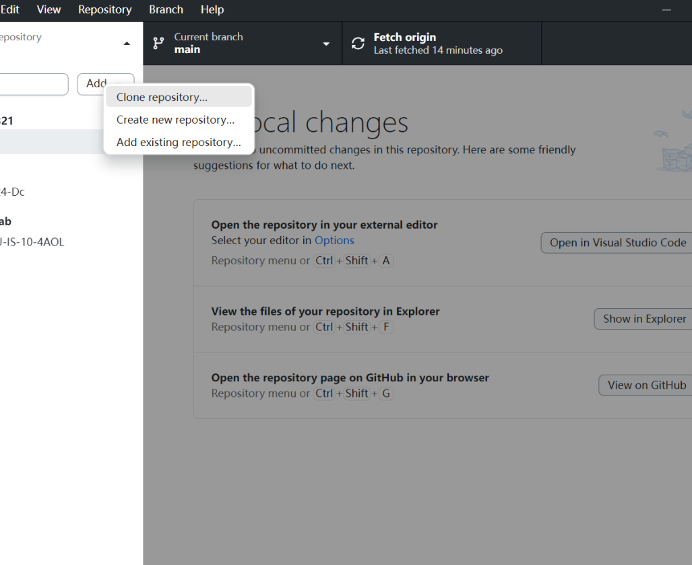
Step 3: LOCAL SETUP
1. Github Desktop
Install Github desktop and sync your account. Clone your repository created earlier and open in Vs Code.
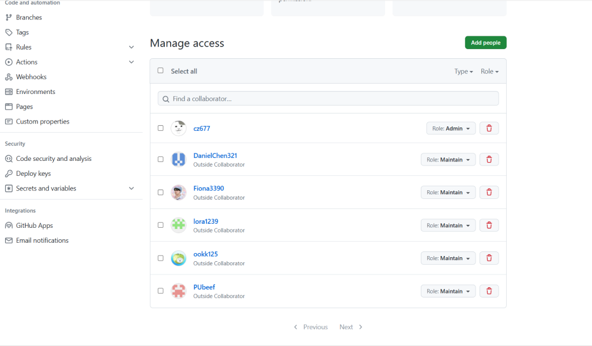
1. Github Desktop
Install Github desktop and sync your account. Clone your repository created earlier and open in Vs Code.
2. Vs Code
Local settings Open Github desktop, clone repository created earlier and open it in Visual Studio Code.
Example:
Setting index.html
To set an index.html file, follow these simple steps:
1. Create a new folder on your computer where you want to store your website files.
2. Open a text editor (such as Notepad or VsCode) and create a new file.
3. Save the file with the name "index.html" in the folder you created earlier. Make sure to save it with the ".html" extension.
This is an example of how files and folders are organized in VScode.
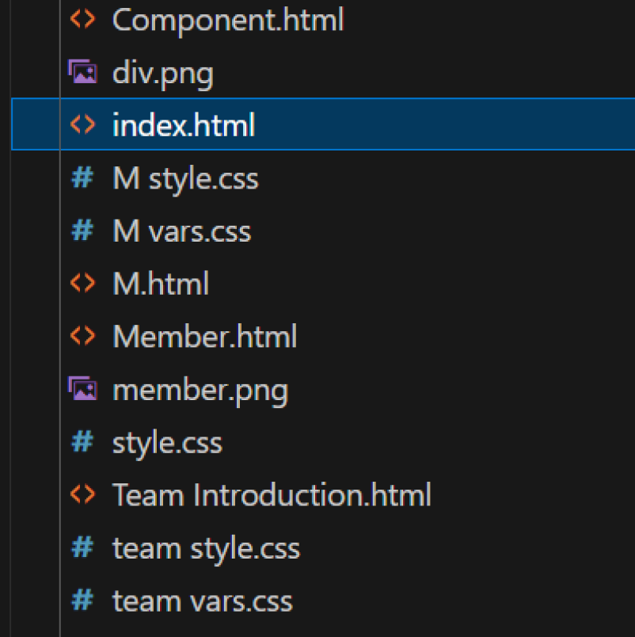
Local settings Open Github desktop, clone repository created earlier and open it in Visual Studio Code.
Example:
Setting index.html
To set an index.html file, follow these simple steps:
1. Create a new folder on your computer where you want to store your website files.
2. Open a text editor (such as Notepad or VsCode) and create a new file.
3. Save the file with the name "index.html" in the folder you created earlier. Make sure to save it with the ".html" extension.
This is an example of how files and folders are organized in VScode.
4. Open the index.html file in your text editor.
5. Start by adding the basic structure of an HTML document by typing this code at the top of the file.
5. Start by adding the basic structure of an HTML document by typing this code at the top of the file.
< !DOCTYPE html >
6. Below the doctype declaration, add an opening and closing
"html" tag:
< html>< /html >
< head>< /head>
< title>Your Website Title< /title>
< body>< /body>
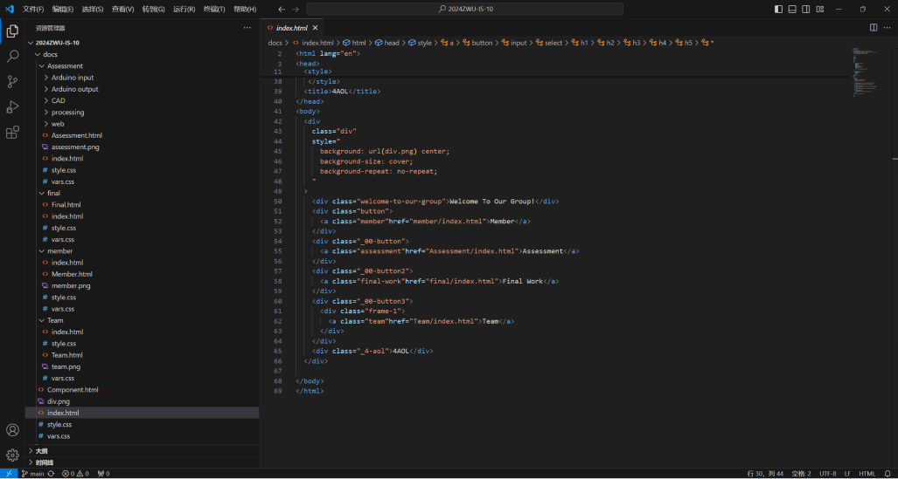
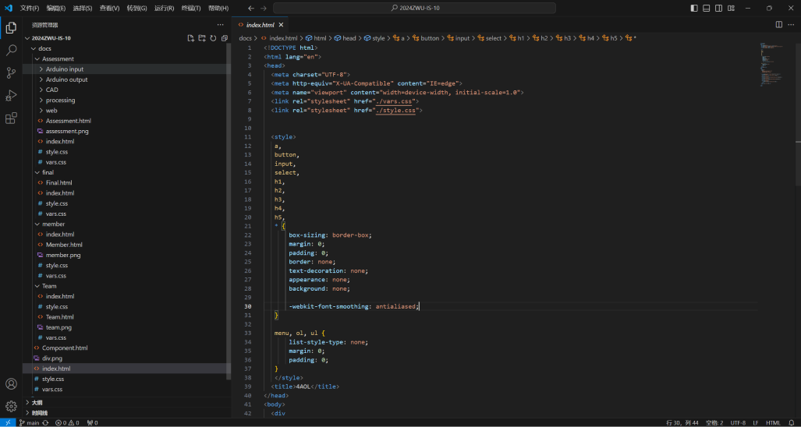
<h1>This is a Heading 1</h1>
<h2>This is a Heading 2</h2>
<!-- ... -- >
<h6>This is a Heading 6</h6>
<h2>This is a Heading 2</h2>
<!-- ... -- >
<h6>This is a Heading 6</h6>
Lists:
Create ordered (numbered) and unordered (bulleted) lists using < ol> and < ul> along with < li> for list items.
Create ordered (numbered) and unordered (bulleted) lists using < ol> and < ul> along with < li> for list items.
<ul>
<li>Item 1</li>
<li>Item 2</li>
<li>Item 3</li>
</ul>
<ol>
<li>First item</li>
<li>Second item</li>
<li>Third item</li>
</ol>
<li>Item 1</li>
<li>Item 2</li>
<li>Item 3</li>
</ul>
<ol>
<li>First item</li>
<li>Second item</li>
<li>Third item</li>
</ol>
Links:
Use the < a > tag to create hyperlinks.
Use the < a > tag to create hyperlinks.
<a href="https://www.example.com">Visit
Example.com</a>
Add Text:
Inside the <body> tag, you can add text using the <p> (paragraph) tag.
Inside the <body> tag, you can add text using the <p> (paragraph) tag.
<p>This is a paragraph of text on my web page.</p>
Add Images:
To add images, use the <img> tag. Specify the src attribute with the path to your image.
To add images, use the <img> tag. Specify the src attribute with the path to your image.
<img src="path/to/your/image.jpg" alt="Description of the
image">
Divs and Spans:
Use <div> for block-level containers and <span> for inline containers. These are often used for grouping and styling purposes.
Use <div> for block-level containers and <span> for inline containers. These are often used for grouping and styling purposes.
Save and View:
Save your HTML file and open it in a web browser to see your web page. Right-click on the file and select "Open with" to choose your preferred browser.
Now you have successfully set up an index.html file! You can open it in a web browser to see how it looks or continue adding more content and styling to build your website further.
for more information
Save your HTML file and open it in a web browser to see your web page. Right-click on the file and select "Open with" to choose your preferred browser.
Now you have successfully set up an index.html file! You can open it in a web browser to see how it looks or continue adding more content and styling to build your website further.
for more information
<div style="color: blue;">This is a blue block of
text.</div>
<p>This is a <span style="font-weight: bold;">bold</span> word in a paragraph.</p>
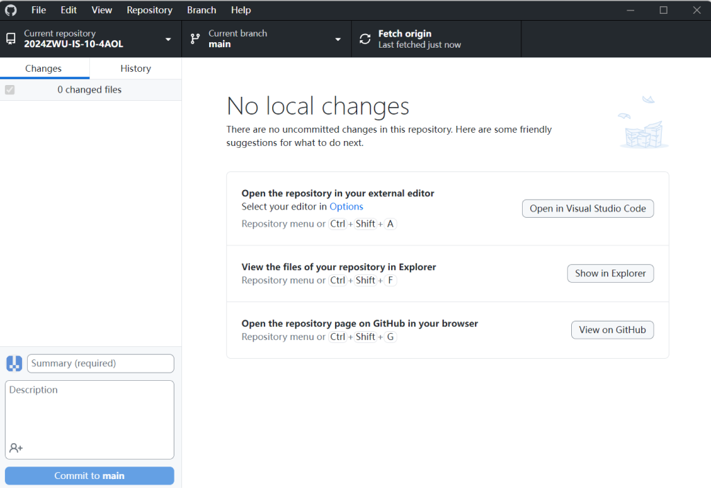
<p>This is a <span style="font-weight: bold;">bold</span> word in a paragraph.</p>
4. Designing in Figma
Figma is a UI design software. We used figma as a basis for what we intend the website design to look like. We also use Figma with the assistance of plugins for the HTML & CSS code then take the necessary measures to make it a working website
a. Designing the website in Figma
Below is a screenshot of the design workflow. Pages are placed side by side with shared elements to ensure continuity in design.
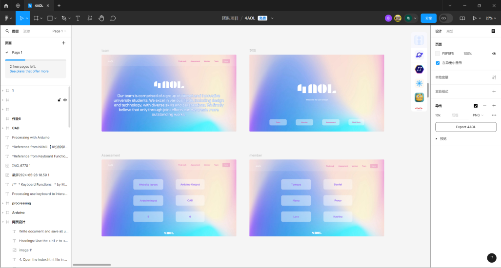
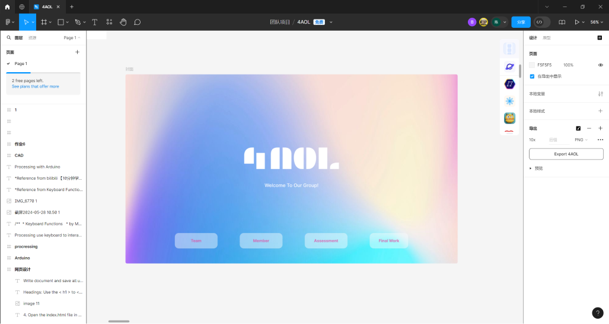
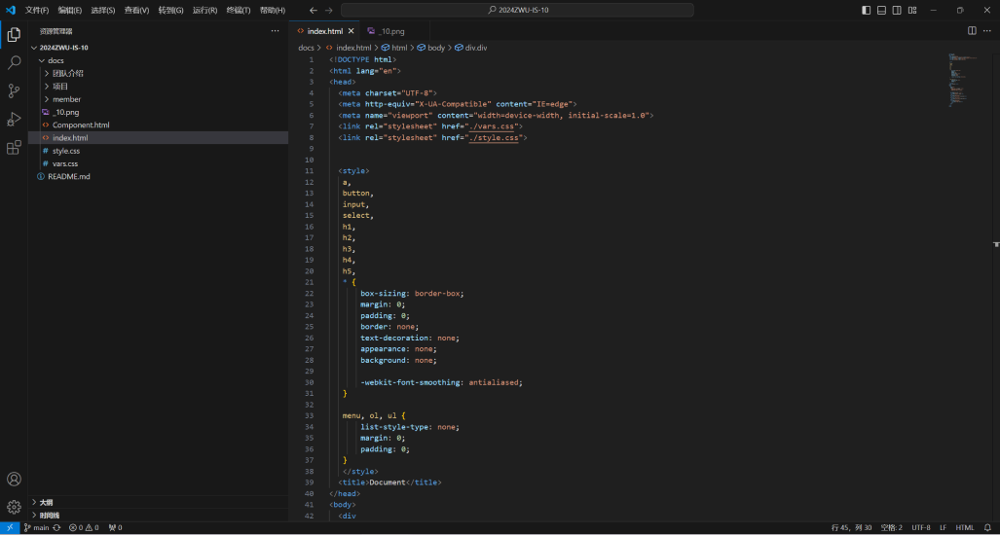
Figma is a UI design software. We used figma as a basis for what we intend the website design to look like. We also use Figma with the assistance of plugins for the HTML & CSS code then take the necessary measures to make it a working website
a. Designing the website in Figma
Below is a screenshot of the design workflow. Pages are placed side by side with shared elements to ensure continuity in design.
HTML and CSS files pushed to the repository and viewed in vscode. This
is where we will edit elements of the pages and continuously add
information over the course of the assignments.
How to make a web page using Figma
For A simple instruction using figma for webpage building:
1. On the Figma homepage, we select “Design File” to start designing our page.
How to make a web page using Figma
For A simple instruction using figma for webpage building:
1. On the Figma homepage, we select “Design File” to start designing our page.
2. Setup Your Canvas on right by selecting the type of device you’d like to
design on. Since we are working on a web page, we select Desktop for our
Frame/Canvas dimensions.
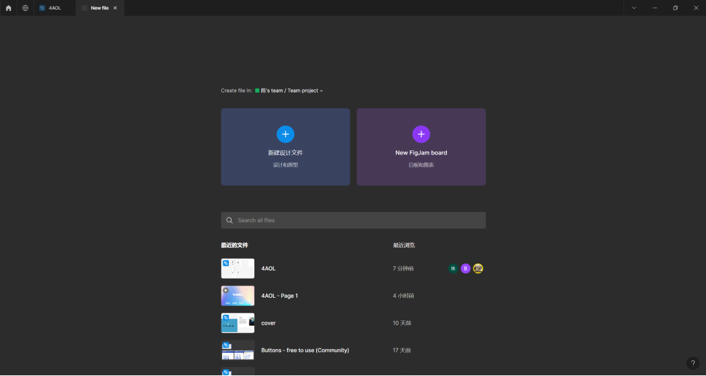
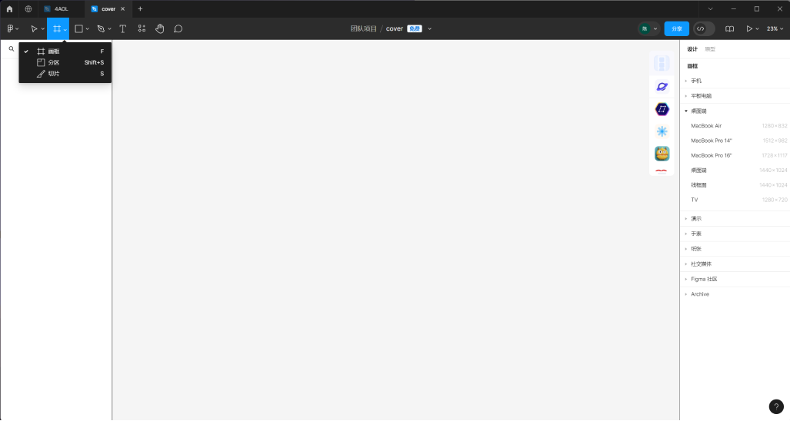
Below, is what is an example of the setup for our Canvas. Selecting Frame
sets up its own layers where we will setup the rest of the page.
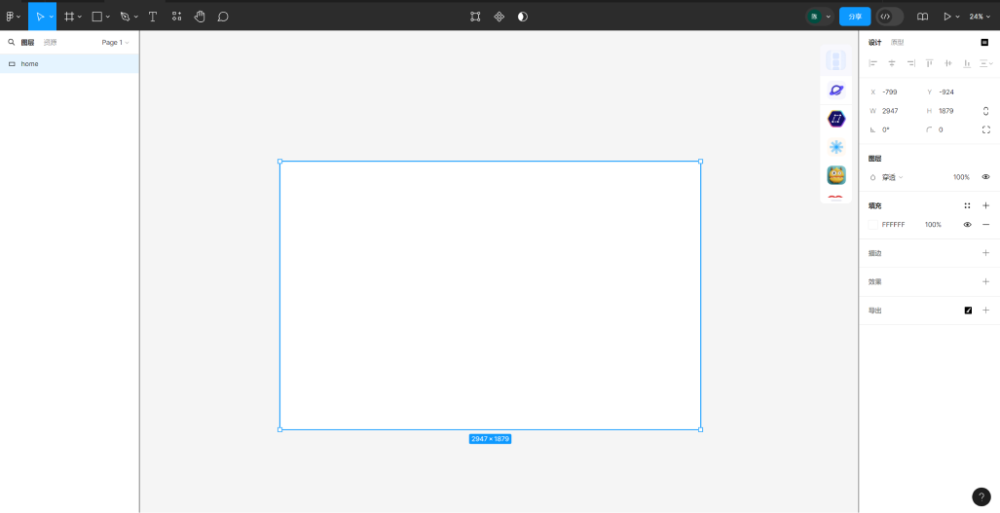
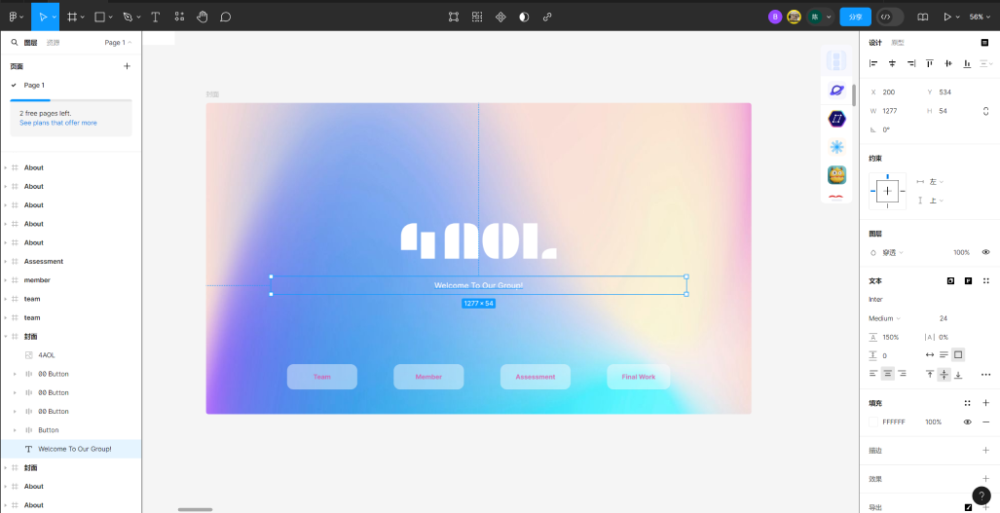
Linking Pages
For Linking the Webpages, Figma was not used as the AutoHTML plugin did not
have the function. Instead, the files were Pulled through VScode and the
edit was made from there to link web pages together. Each page is linked to
one another using HTML. The example shown will link the Assignments, Members
and Team page from the Home Index.html Page.
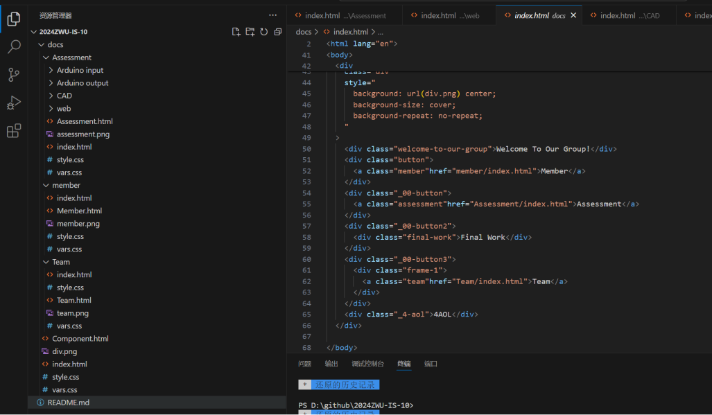
The Code connecting ‘Assignments/index.html’, ‘Team/index.html’,
‘Member/index.html’ pages from the Home ‘index.html’ page is as follows:
AUTOHTML
The AutoHTML plugin for Figma is a powerful tool designed to bridge the gap
between design and development. It streamlines the process of converting
your Figma designs into clean, production-ready HTML code.
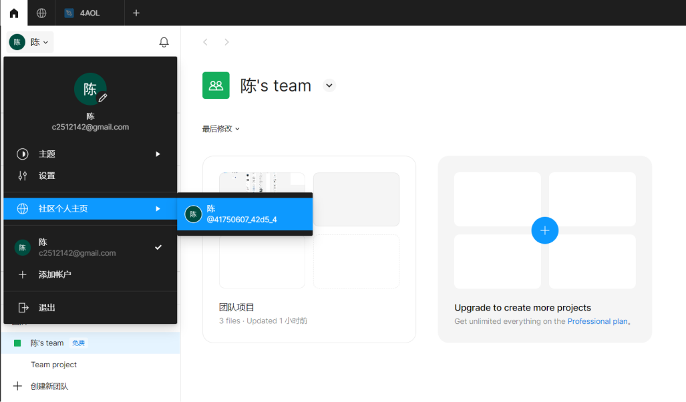
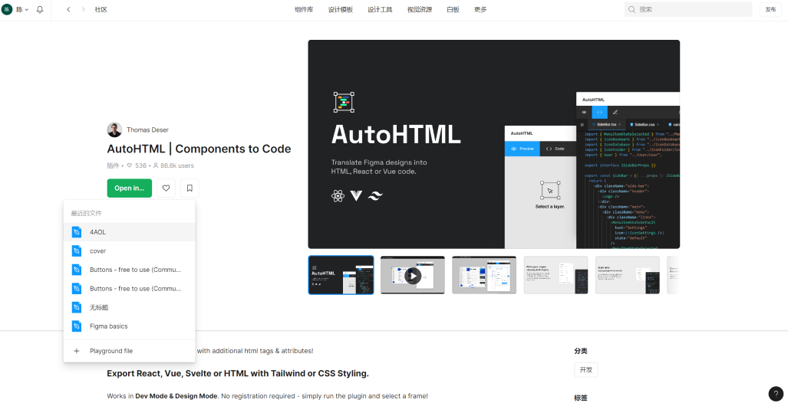
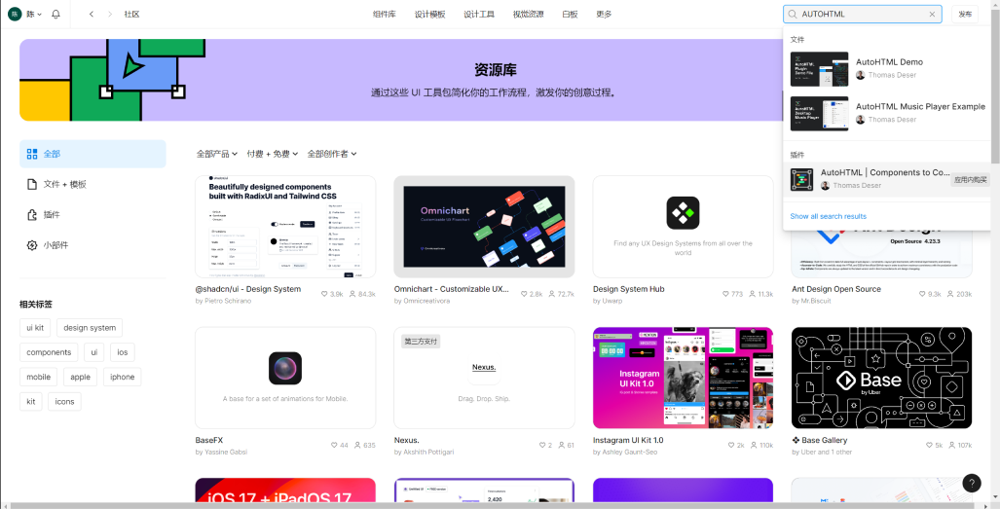
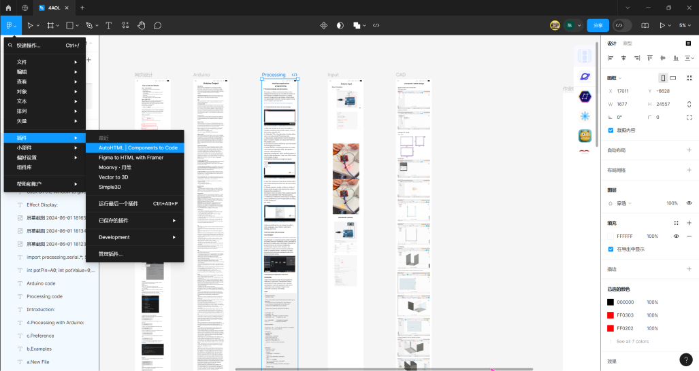
 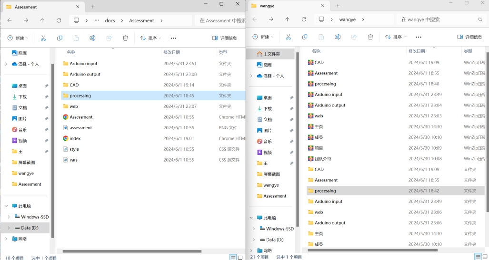
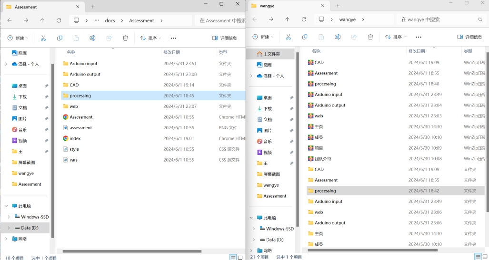
Add Repository
Push to GitHub
Edit in VScode
Add comments before changes
Commit Changes
Elements Tools
Frame
Layers
Text Layer
Element Constraints
Text Edits
Click to download to your desktop and unzip
Move the file to the folder you want to place it in
Canvans Size
Move Tools
Shape Tools
Text Tools
Region Tools
Creation Tools
Hands Tools
Resouces
Add Comment
towards
https://nexmaker-fab.github.io/2023zjudem-Tomorrow-s-Wonder-Team/PM.html
draw lessons from